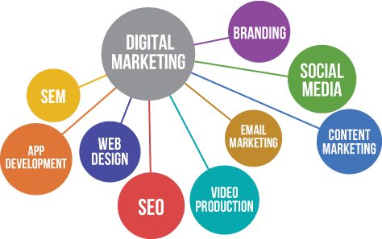

Les ingrédients d’un site web réussis
Introduction
Un site web, c’est un élément indispensable dans votre communication online vous diront la majorité des agences. Chez Animatic, on n'est pas forcément d’accord. La plupart des sites internet n’ont aucune utilité et ne vous apportent pas un seul centime (ni même un prospect). Même bien référencé sur Google certains perdent des milliers d’euros sur la création d’un site web avec une stratégie complexe. Pour ne pas tomber dans ce piège et éviter de perdre de l’argent, Ludovic, notre spécialiste d’acquisition de trafic et marketing vous explique tout aujourd’hui !
Le site web n'est rien sans une stratégie
Créer un site internet c’est bien. Mais le plus important reste la façon dont on met en avant l’entreprise. Quelle est notre cible, quel est le but unique du site ou encore pourquoi les visiteurs devraient venir sur notre site ? Trop de questions que peu de monde se pose lors de sa création. L’important sur le site n'est pas la technologie utilisée mais ces questions. Dans le cas des startup ou des entreprises avec des concepts innovants de manière générale, il faut savoir s’il y a un réel intérêt de la cible. Un élément important c’est le canal d’acquisition. Il faut penser le site web comme un discours de vente automatisé mais il faut amener des visiteurs. On peut utiliser des stratégies comme le référencement, la publicité sur Google (Google Ads) ou encore les moyens organiques comme Facebook et Instagram.
Les secrets du site Internet cachés par les experts
Bon, je vous ai peut-être un peu survendu la chose. Les secrets sont simples. Du contenu adapté, la mise en place de CTA (appel à l’action précis) et l'obsession de l’expérience utilisateur. C’est la combinaison de ces différents éléments et évidemment d’une stratégie d’acquisition et de conversion complète qui fait la réussite d’un site web. Ce qui fait que 2 écoles d’une même ville avec un site web font 0 euro pour une et plus de 50 000 euros par ans pour l’autre. Un dernier conseil : apportez le maximum de valeur !
Comment passer de 1 à 100
Après avoir passé de 0 à 1 une fois votre site web créé, on va chercher à passer de 1 à 100. L’une des clés pour faire performer son site web c’est la mesure et la prise de décision. Personnellement je vous conseil 2 outils assez puissants que sont Google Analytics et Hotjar. Le premier va vous permettre d’avoir les données clés sur votre site web comme le taux de rebond ou encore la durée moyenne des sessions. Le Second, Hotjar va vous permettre de connaître les “zones chaudes” de votre site et d’analyser le parcours utilisateur. C’est la mesure et l’optimisation de votre site web qui va vous permettre d’avoir un outil d'acquisition parfait !
Pour résumer
La mise en place d’un site web demande énormément de réflexion. Cela va bien au delà du simple template wordpress avec quelques informations. La création du site web demande une véritable expertise. Non pas une expertise en matière de code car avec l'apparition des plateformes types wix cela devient de plus en plus facile mais une expertise en matière de parcours utilisateur et d’expérience. La clé c’est l’analyse et la stratégie, pour ce faire nous vous invitons à nous contacter afin de prendre rendez-vous, pour vous donner toutes les clés du site web rentable et le plan d’action étape par étape pour performer avec votre site.
Le Seigneur des Anneaux et les effets spéciaux
La dimension épique des scènes de batailles et la grandeur des cités comme celle de Minas Tirith sont deux choses difficiles à retranscrire à l’écran sans l’aide d’effets spéciaux de qualités. C’est pour cela que le film compte environ 1500 plans truqués.
De nombreuses maquettes ont ainsi été créées pour le besoin du film. Des maquettes de cités mais aussi des maquettes pour des engins de sièges. On a, par exemple, pour un même élément, plusieurs maquettes à échelles différentes pour des plans plus ou moins grands. Des modèles 3D sont ensuite créés à partir de ces maquettes. On utilise ici le principe de photogrammétrie.
Le Retour du Roi à fortement aidé au développement de la motion capture car c’est le premier film à mettre au point la “Mocap on set”. C’est à dire mélanger une scène en motion capture et une scène normale grâce à des caméras infrarouges très performantes. Ces caméras sont capables de détecter uniquement les points émis par les capteurs sur la combinaison. De ce fait, le décor entre les capteurs et les caméras n’a aucun impact.
Venons en aux scènes de batailles. Dans un livre, des adjectifs suffisent à décrire la grandeur d’une bataille et à la rendre époustouflante. Mais au cinéma, c’est un peu plus compliqué à mettre en oeuvre. C’est là qu’intervient le logiciel de foule Massive qui est à l’origine des scènes de batailles épiques opposant des milliers de soldats. Par exemple pour l’assaut final sur Minas Tirith, plus de 200 000 orques sont présents.
Environ 350 mouvements sont enregistrés grâce à la motion capture.
Le logiciel utilise l’intelligence artificielle. Tous les soldats agissent par eux mêmes en fonction de la situation grâce aux 350 mouvements enregistrés, c’est à dire que chaque soldat possède une vue et réagit à ce qu’il voit, c’est à ce moment qu’il décide de quoi faire. Par exemple parer, riposter, attaque, et ainsi de suite. Que ce soit pour un court métrage, ou un grand film, les effets spéciaux et les trucages restent donc les meilleurs solutions pour produire des scènes en théorie complexes, voir impossible à tourner.